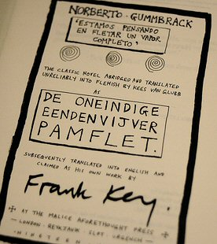

Monday, January the 23rd, 2006
back to: title, date or indexes
The Immense Duckpond Pamphlet was a pamphlet about an immense duckpond, as opposed to an immense pamphlet about a duckpond. The text consists of twenty six chapters, lettered from A to Z. It was published in pamphlet form late in the last century, and as I am still fond of it I have decided to add it here, in serial form. So for the next twenty six days this spine-tingling work of duckpondiana will appear, chapter by chapter. I have made a few amendments to the original text, where it was less than felicitous, or where I could see room for improvement.
Here is a picture of the original title page, which should be studied with due care.

Hooting Yard on the Air, May the 16th, 2019 : “A Bit Of A Kerfuffle Down By The Bins Outside The Barn” (starts around 29:19)